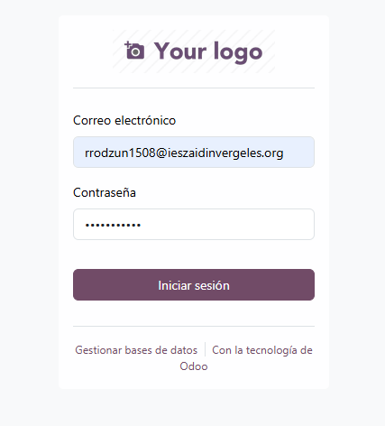

Instalación y Administración del Sistema de Gestión Empresarial Odoo
Instalación del SGE
Lo primero es dirigirnos a la página del programa Odoo.
Bajaremos hasta encontrar el apartado “Comparar ediciones”
Bajaremos hasta lo más bajo de la página y le daremos donde dice descargar.
Nos aparecerán las distintas versiones del programa para descargar, en este caso descargaremos la versión 18 Community de Windows.
Una vez abrimos el ejecutable se nos abrirá este menú para la instalación le daremos a “next” para continuar.
Ahora aceptaremos estos términos y continuaremos con la instalación.
Ahora tendremos que indicar el tipo de instalación que queremos seleccionando los componentes que queremos instalar para el programa en este caso lo dejaremos por defecto como en la imagen.
Aquí indicaremos la información(hostname,el puerto, usuario y contraseña) para la conexión SQL en mi caso lo dejare por defecto.
Aquí indicaremos la ruta de instalación del programa en este caso será la ruta por defecto que es en el disco C (el principal). Y por último le daremos a instalar.
Tras completar la instalación le daremos a siguiente y abriremos el programa.
Administración y Configuración
Tras abrir el programa odoo nos abrirá una página en el navegador pidiendo que creemos una base de datos. Nos pedirá ponerle un nombre, nuestro correo, una contraseña, número de teléfono(no obligatorio), idioma y país. Con todo eso puesto le daremos a crear la base de datos.
Tras crearla nos pedirá iniciar sesión.
Tras iniciar sesión nos aparecerán las distintas aplicaciones que podemos instalar y usar para el programa.
En este caso le he dado a activar la aplicación de Inventario. La aplicación de inventario es la que vamos a ver a continuación. Para meternos dentro nos dirigiremos al apartado de aplicaciones y donde pone inventario.
Características
Gestión de almacenes
Una de las características es crear y administrar uno o varios almacenes. Para crearlo tenemos que darle a configuración y donde pone Gestión de almacenes a Almacenes.
Una vez dentro le tendremos que dar al botón “Nuevo” y nos saldrá para ponerle el nombre a nuestro almacén. Una vez puesto le daremos al pequeño botón de guardar manualmente situado justo a la izquierda de la x. También es necesario asignarle un nombre corto.
Tras haber creado el almacén podremos tener un control total de las ubicaciones internas de cada almacén. También podremos añadir y modificar las categorías de almacenamiento. Y también añadir unas reglas para el almacenamiento.
Gestión de productos y stock
Otra características es poder añadir y gestionar productos, teniendo un registro de todo ello, nombre, código de barras, unidad de medida, categoría, proveedor, etc.
Al darle a nuevo para crear un producto nos saldrá todo eso que podemos modificar el nombre, el tipo de producto, su precio de venta, el coste, el código de barras, etc. Para guardarlo sería al mismo botón pequeño de la nube, que es para guardarlo manualmente.
Al darle a actualizar cantidad nos mandará al menú del stock.
Para crear un stock deberemos darle a nuevo y nos dejará poner la cantidad existente de ese producto y ver cuánto es el restante del mismo. Y tiene muchas más funciones.
Recepciones y envíos
Otra función es crear recepciones para tener una gestión de los pedidos, preparar entregas a los clientes y demás.
Al darle a nuevo para crear una nueva recepción podremos modificarle de quien lo queremos recibir, el tipo de producto, la ubicación de destino, la fecha programada y demás. Para guardarlo tras añadirle la información le debemos dar a validar.
Informes y análisis
También podemos tener un control del historias de movimientos que podemos ver desde el apartado de informes dándole a historial de movimientos.
Y también podemos tener informes de la disponibilidad de productos, los movimientos del inventario y demás.
Automatización y reglas
Dentro del apartado de productos seleccionando cualquier producto le podemos añadir reglas de reabastecimiento.
Las reglas sirven para hacer un recuento del producto según los días que indiques y reponer los productos cada esos x días. Y luego lo guardamos como hemos hecho anteriormente.
Todo esto son las características más importante del programa